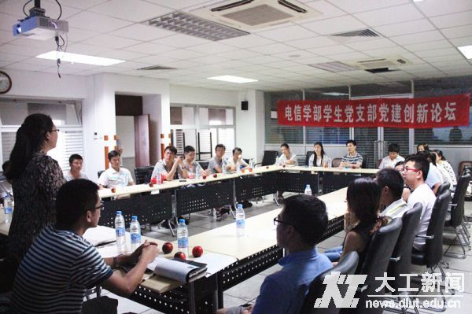
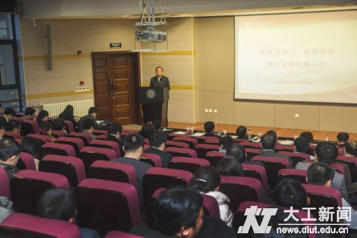

大工新闻网
大工资讯，一网尽得

学术动态
 ·物理学院承担国际专项通过验收
11-20
·物理学院承担国际专项通过验收
11-2011月7日上午，由物理与光电工程学院王友年教授团队承担的国家国际科技合作专项“等离子体工艺腔室仿真及实验评价”的结题验收会在我校国际会议中心召开。
·化工学部承担国家科技支撑计划项目通过结题验收
12-25·“十二五”国家科技支撑计划项目启动会在我校召开 11-20
·材料学院与东京工业大学金属工学科举办第六届学术研讨会 10-28
·第五届材料及化工过程多尺度模拟计算国际研讨会在连召开 09-18
·新结构高性能柔性储能电极材料研究取得新进展 08-28
更多>>
部院风采
 ·电信学部研究生党总支开展工作 01-07为了更好地在党的群众路线教育实践活动中加强基层组织建设，结合学部业已成熟的基层党务工作规范制度，以常规培训检查为载体，以业务素质考察为辅翼，以党员骨干自……
·建工学部启动党支书能力提升计划
01-06·管理与经济学部召开年度总结大会 01-04
·管经学部召开迎接AACSB国际认证动员大会暨知识竞赛 01-04
·梳理凝炼共建网络信息化平台 12-19
·数学科学学院党委积极开展与王家村党委共建活动 12-16
·机械工程学院171人参加入党积极分子培训 12-16
·化环生学部分党校四环节开展党员发展对象培训 12-11
更多>>
大工人物
·白燕：愿做白鹭飞燕逐梦蓝天 01-05记得初入大学时，稚嫩未脱的她和同学做自我介绍时说，“我叫白燕，是白鹭飞燕的意思，白鹭是坚守信念的鸟，眺望远方，未忘初衷；飞燕一直追逐着梦想，翱翔天际……
·杨雨朦：一份对青春的执着 只为实现自己的梦
12-31·【标兵故事】杨芳明宇：明确目标 用心聚焦 12-29
·【就业榜样】于露：入主流 上大舞台 12-26
·【标兵故事】钟俊弛：睿思力行 上下求索 12-24
·项顶顶：求实创新自强力行 12-22
·【就业榜样】冯小丽：圆梦阿里，拥有专属于自己的标签 12-19
·【标兵故事】李思远：千淘万漉虽辛苦 吹尽狂沙始到金 12-15
更多>>

新闻排行
·大工教授当选长江学者特聘教授 01-29教育部近日公布了2013、2014年度长江学者特聘教授、讲座教授名单，我校化工与环境生命学部段春迎教授和电子信息与电气工程学部孙希明教授当选长江学者特聘教授。
·大连理工大学原副校长徐福勤遗体告别仪式举行
01-31·【寒假日记】数学科学学院走访优秀生源基地校 11-10
·化环生、管经、人文学部及附属高中领导班子换届 02-04
·中英专家学者聚首大工研讨潮流能 02-03
·大连高新技术产业园区来访我校 02-03
更多>>
每日推荐
 ·校35个机关部门进行述职述廉汇报 01-261月23日，学校召开校机关部门、直属单位2014年集中述职述廉大会。全校35个机关部门、直属单位负责人集中开展述职述廉，汇报本部门贯彻落实学校工作要点情况……
·【我的2014】大工航天人
01-25·学校召开会议传达第二十三次全国高校党建工作会议精神 01-25
·魏小鹏书记到附属高中调研 01-23
·学校参加2015年全国教育工作视频会 01-23
·把握东北振兴新机遇 推广协同创新新模式 01-23
更多>>
版权所有©2015 大连理工大学软件学院·OurEDA实验室Web组 郭德继
QQ:812966201
QQ:812966201